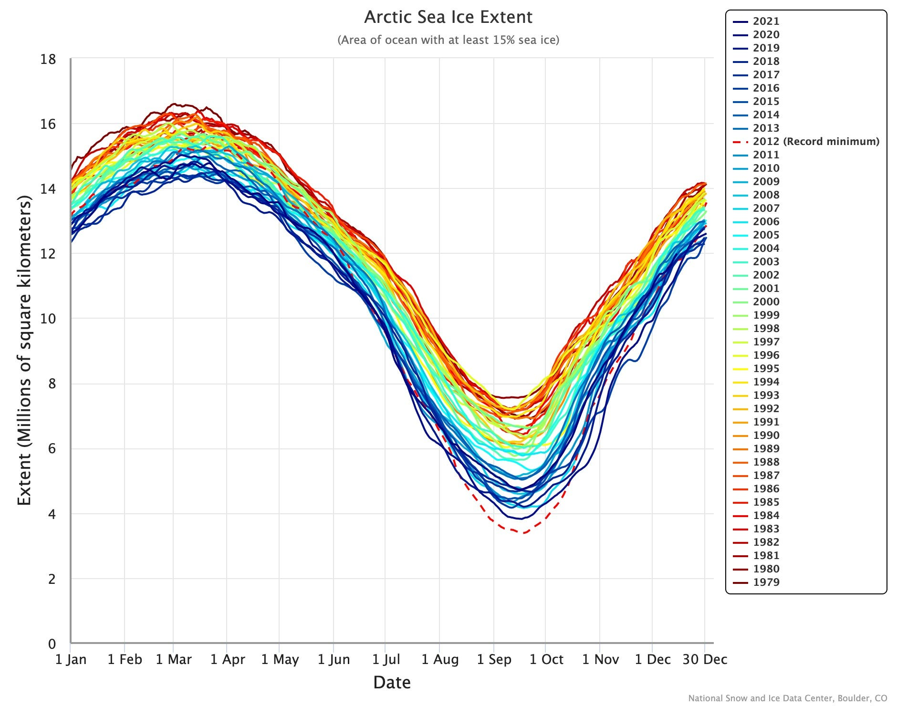
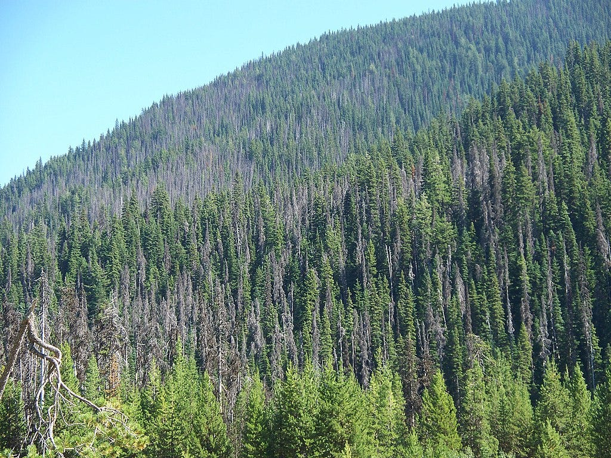
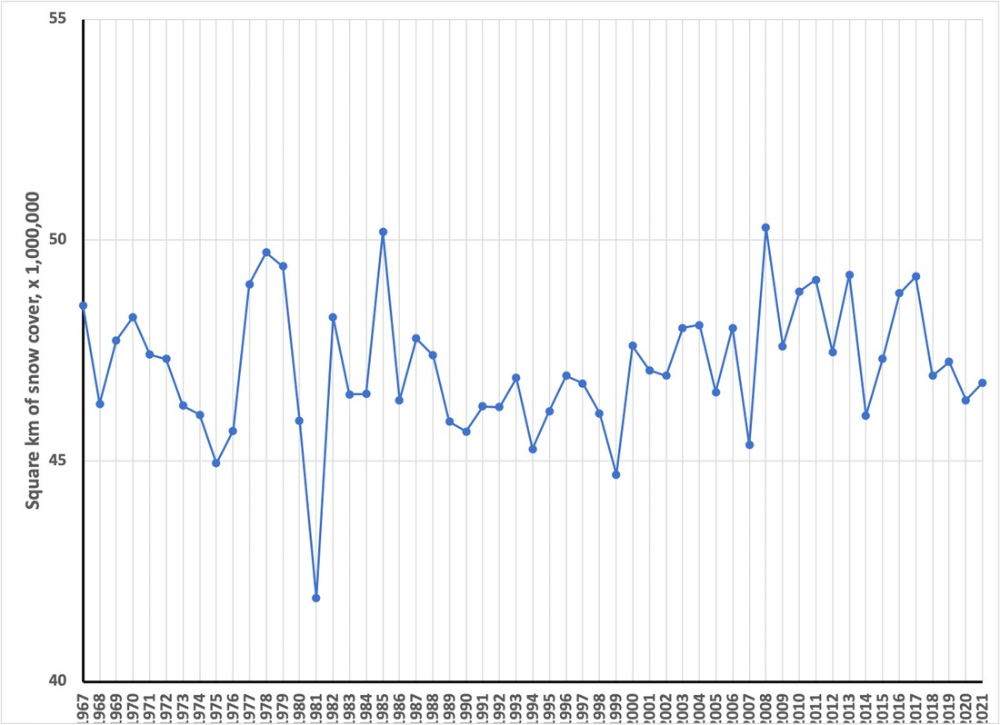
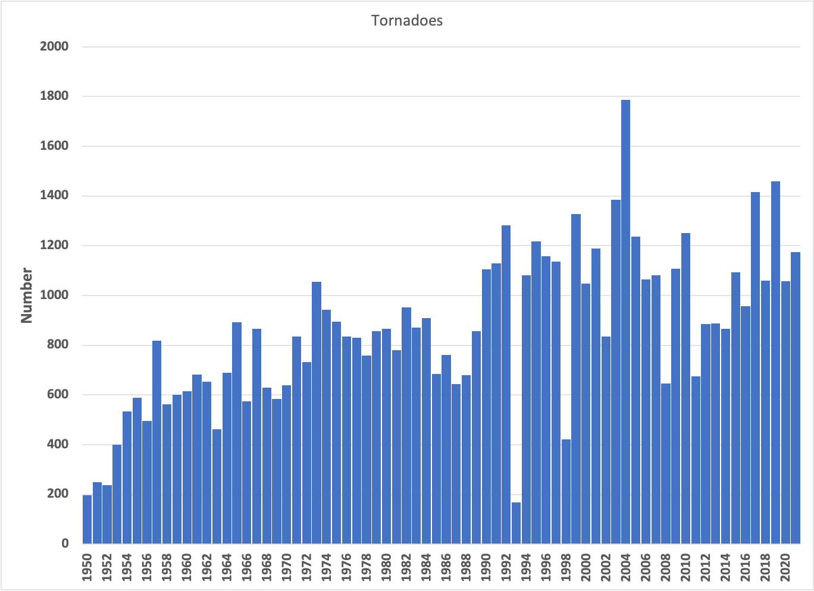

I’m Jonathan Burbaum, and this is Healing Earth with Technology: a weekly, Science-based, subscriber-supported serial. In previous installments of this serial, I have offered a peek behind the headlines of science, focusing on climate change/global warming/decarbonization. I have welcomed comments, contributions, and discussions, particularly those that follow Deming’s caveat , “In God we trust. All others, bring data.” Recently, I’ve pivoted to a more direct approach.
COP26 is behind us, and, like its 25 predecessor “Conferences of Parties”, it’s produced a series of toothless political commitments that are loosely based on recommendations given by large teams of scientists. Sadly, such approaches, while intellectually honest, are seriously limited in scope, and thus doomed to failure in the long run. Given the continued naive commitments of our leaders, I must now propose a more aggressive pitch:
One planet. One solution. Now.
That’s intentionally provocative, but not prescriptive. No treatment has all the answers. But we must prepare to act with clear-headed decisions—any partial solution should be required to bring the rest of the solution to the table as well, and to specify what the tradeoffs are. We won’t get too many chances to get it right.
You can read Healing for free, and you can reach me directly by replying to this email. If someone forwarded you this email, they’re asking you to sign up. You can do that by clicking here .
If you really want to help spread the word, then pay for the otherwise free subscription. I use any money I collect to increase readership through Facebook and LinkedIn ads.
Today’s read: 5 minutes.
As a heads up, I’ll be taking the next couple of weeks off from publishing this rag. I need a rest, and I also need to figure out where I will take it in 2022. Suggestions welcome, send to healingearth@substack.com.
In honor of the holidays, though, I thought I’d provide a semi-serious view into the future of the Christmas traditions, as practiced for centuries in western civilization. In the next couple of decades, without action (or even with effort, frankly), the things we pass on to our children will change. So, time to prepare!
I’ve saved this issue’s quotation for the end. So what about Christmas, 2050?
Santa Claus
While the sleigh propelled by flying reindeer is undoubtedly pretty awesome, 1 the old boy had better find a different home. Here’s what it looks like for the Arctic around the North Pole:

Over the 40-odd years covered by the data, the trough in September has gotten deeper, such that, if the trend continues, in the next 40 years or so, there will be no ice at all at the North Pole for at least part of the year.
In the “time-lapse” view, this is what the primary data for September (courtesy National Snow and Ice Data Center, University of Colorado, Boulder) looks like
The long-sought Northwest Passage and the sea route from Siberia to the North Atlantic have been opened for several weeks in recent years. This reality has changed the world: Canada, Russia, and other bordering states are posturing over control of the Arctic Ocean , and cruises can now take tourists from Nome to Halifax through the Northwest Passage. Bottom line: Santa had better move to a land-based operation or buy a big boat! And, you’ll have to stretch the truth more than usual to depict Santa to your grandchildren.
What about Santa’s reindeer?
Global warming affects the biosphere in unpredictable ways, and biological evolution is irreversible, so it’s impossible to say for sure. However, biology will adapt, and natural selection may lead to the speciation of today’s reindeer in the long run. The population of reindeer has fluctuated over recent history, with some changes attributed to climate change (like most every phenomenon). They are unique beasts that are adapted to the tundra. Like humans, they evolved at a lower level of carbon dioxide than currently found in Earth’s atmosphere. Both species will, like those that have gone before, either adapt or die out.
Christmas trees
Another traditional Christmas decoration is an evergreen tree, felled and dragged indoors for decoration. Again, it’s hard to say for sure how biology will adapt, but evergreen trees have been around for a long time. So, you don’t have to worry about Christmas trees disappearing soon. But, large swaths of pine forests are being destroyed by pine beetle infestation (usually controlled by colder weather), leading to more fire-prone areas. So, you may want to consider a reusable artificial version in the future.

Snow
Despite an overall increase in evaporation from warmer oceans, it may seem evident that global warming will result in less snow and less accumulation. But unlike ocean-based ice, snowfall is local and seasonal. What are the trends?

Well, another thing we don’t have to worry about. There may be fewer snowy days, less snowfall, and fewer glaciers, but there’s still going to be snow.
Aren’t extreme weather events bound to spoil future holidays?
If only we knew the future, we could do a better job of planning! But as I’ve described before, model predictions, particularly about the specifics of climate change, are highly uncertain. Some may reflexively claim that the supercell-based tornadoes that cut a path of destruction through the midwest earlier this month are a harbinger of future catastrophe, but what does the data say?

While it looks like there are more in recent times, it’s an artifact of how much better we’ve gotten at measuring smaller tornadoes—see the following analysis from National Geographic 2 :
At first glance, there appears to have been an increase in tornadoes since these records began, but that is not the full story. It was not until the early to mid-1990s that an extensive Doppler radar network was established in the United States for the detection of tornadoes. Until then, records relied on eyewitnesses to report tornado sightings, which means that if no one saw a tornado, it would not appear on weather records. This makes it hard for researchers to spot any long-term trends because the data is skewed by an increased detection of small tornadoes and tornadoes in sparsely populated areas after Doppler radar networks were introduced.
In fact, when you remove small tornadoes from the record, the data does not suggest any long-term increase in tornado frequency. If anything, there may be a slight decline in the number of very strong tornado events. However, other research has found evidence of an increase in tornado power.
It’s complicated. For more information, see this excellent article by Prof. James B. Elsner.
That’s only one example. Of course, it doesn’t mean we won’t see more late-season hurricanes, droughts, torrential rains, etc., but just because the weather is variable doesn’t mean every disaster is due to global warming.
We can debate and discuss and deride forever. But, unless we do something about it, it’s as Shakespeare described:
The way to dusty death. Out, out, brief candle.
Life’s but a walking shadow, a poor player
That struts and frets his hour upon the stage,
And then is heard no more. It is a tale
Told by an idiot, full of sound and fury,
Signifying nothing.Macbeth , Act V Scene 5
Well then, that’s all for this year. Thanks to my readers and responders for an interesting 2021. I’m looking forward to 2022 and all the twists and turns to come.
One thing is for sure, if flying reindeer truly existed, we should breed them. That’d solve an intractable problem—transcontinental air travel—without geologic carbon sources.
https://www.nationalgeographic.org/article/tornadoes-and-climate-change/